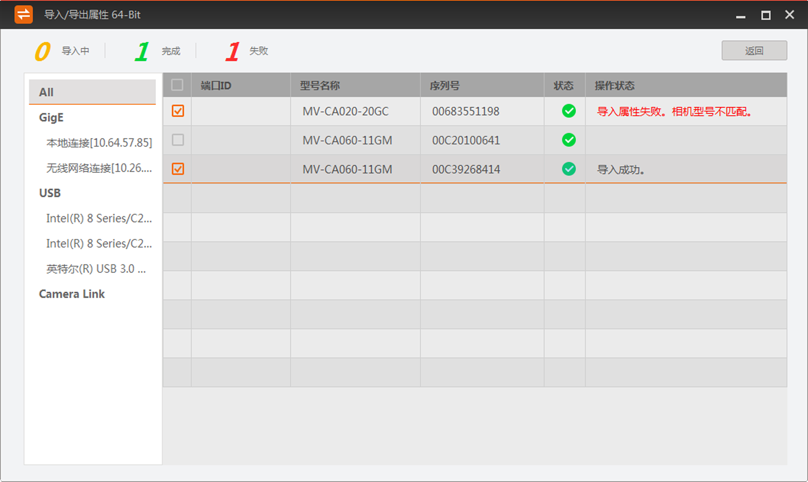

导入/导出属性工具可对多个相机的参数进行批量导入或导出的操作。
-
通过菜单栏工具的导入/导出属性进入工具，如下图所示。
- 可选操作：
根据需求在工具右侧选择接口。
- 可选操作：
通过工具右上角的
 设置相机的显示项。
设置相机的显示项。
-
选择需要导入或导出属性的相机。
-
进行导入或导出操作。
- 选择导入时，需要选择导入的mfs文件并打开。
说明：
选择多个相机导入时，只有同型号相机的属性可以批量进行导入属性的操作。若存在不同型号的相机，操作状态栏会提示“导入属性失败，相机型号不匹配”。
- 选择导出时，需要选择文件存取的路径并选择文件夹。
说明：
选择多个相机导出时，工具会导出每个相机的属性。
工具开始导入或导出相机属性，工具上方显示总体情况，被选择的相机的操作状态显示状态或其他详细信息，如下图所示。

图 2 导入多个相机属性
- 可选操作：
点击返回可退出工具总体情况的显示。